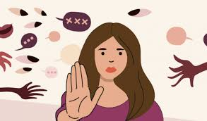
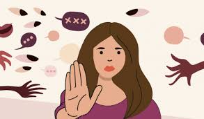

que son y como se sostinen los estereotipos de genero?
nosotros pensamos que los estereotipos de genero son atributos que se ponen a las personas segun su genero
biologico.
estos se sostienen a traves de la misma ideologia o comportamiento en el tiempo
de que manera estan determinados?
la cultura, la sociedad, la religion y el pais son grandes influyentes en los estereotipos de genero y determinan los estereotipos
que mandatos se atribuyen a cada genero?
los mandatos que se atribuyen a cada genero suele ser siempre el hombre dominando a la mujer y esto genera
violencia economica y psicologica. producindo un mesosprecio en las mujeres.
obviamente, esto se puede
generar al reves, la mujer violentando al hombre
que frases conocen que reproducen estos estereotipos?
- "todos/das iguales"
- "las mujerers a la cocina"
- "las mujeres en casa y los hombres en el trabajo"
- "las mujeres son delicadas"
- "los hombres no lloran"
- "las mujeres no saben de futbol"
- "se lo buscó por andar vestida así"
- "ese trabajo es de hombre"
- "deberias ser mas femenina/masculino"
- "detrás de un gran hombre hay una gran mujer"
que podemos hacer desde nuestro lugar para dejar de reproducirlos?
lo que podemos hacer desde nuestro lugar es: dejar de nomarlizarlos, aceptarnos como somos (diversidad de genero), dejar de implementar estereotipos en la casa
.jpeg) 
